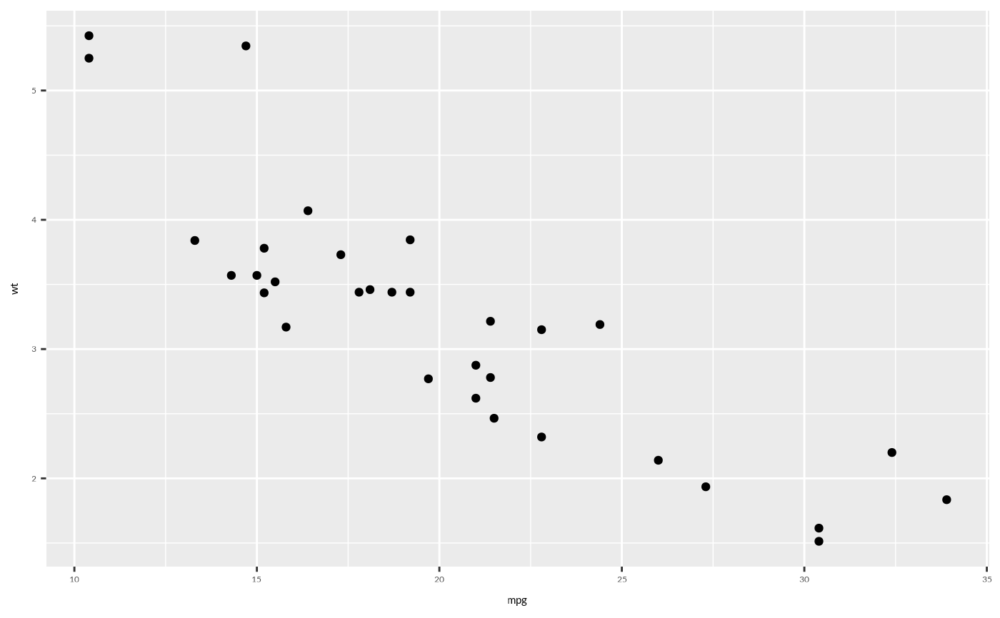

wjp_fonts() loads the fonts used in WJP visualizations. Call it once at
the beginning of your R session before creating any WJP chart.
Two engines are available:
engine = "showtext"(default) downloads the fonts with sysfonts and activates showtext, which draws text as polygons on any graphics device. This is the historical behavior and works with the basepng()andpdf()devices.engine = "systemfonts"makes the static font files available to systemfonts, without showtext. Devices built on systemfonts (ragg, svglite) then write real text thatwjp_save()can convert to outlines, and every weight of the fonts can be used.
Usage
wjp_fonts(
engine = c("showtext", "systemfonts"),
showtext = NULL,
path = NULL,
cache_dir = NULL
)Arguments
- engine
String.
"showtext"(default) or"systemfonts".- showtext
Logical. Whether to activate showtext. Defaults to
TRUEfor the showtext engine andFALSEfor the systemfonts engine, which also turns off an active showtext session.- path
String. Optional directory containing the static font files (systemfonts engine only).
- cache_dir
String. Directory where downloaded font files are kept (systemfonts engine only). Default is the user cache directory of WJPr.
Value
Invisibly, NULL for the showtext engine, or a data frame with the
font files and the families that resolve to them for the systemfonts
engine.
Details
Both engines provide the family names used by WJPr:
Lato Full: regular (400) and bold (700). Default family of every WJPr chart.
Lato Light: light (300) and bold (700).
Lato Black: black (900).
Inter Tight: regular (400) and bold (700).
The systemfonts engine also makes every static weight of Inter Tight
available and registers one family per weight, so that each role of a
chart can use its own weight: Inter Tight Medium (500),
Inter Tight SemiBold (600), and Inter Tight Bold (700).
The text arguments of WJPr charts (e.g., value_fontface) accept the faces
"medium", "medium.italic", "semibold", and "semibold.italic", which
use these families when they are available and fall back to "bold" and
"bold.italic" otherwise (e.g., with the showtext engine or with Lato).
WJP country reports print values in Inter Tight SemiBold Italic
(value_fontface = "semibold.italic").
Static font files are read from path when supplied (file names as
distributed by Google Fonts, e.g. InterTight-SemiBoldItalic.ttf and
Lato-Regular.ttf). Otherwise they are downloaded once from Google Fonts
into cache_dir. Both fonts are licensed under the SIL Open Font License.
Fonts installed on the system with the same family names are superseded
by these static files.
WJPr charts use Lato Full by default. To switch every chart and
theme to another loaded family (e.g., Inter Tight), set the wjpr.family
option once per session: options(wjpr.family = "Inter Tight"). See
wjp_font_family().
Examples
# Load fonts before creating charts
wjp_fonts()
# Now you can use the fonts in ggplot2
library(ggplot2)
ggplot(mtcars, aes(x = mpg, y = wt)) +
geom_point() +
theme(text = element_text(family = "Lato Full"))

if (FALSE) { # \dontrun{
# Static files known to systemfonts (text can be outlined on export)
wjp_fonts(engine = "systemfonts")
options(wjpr.family = "Inter Tight")
} # }